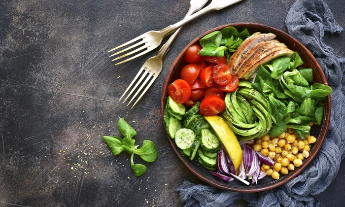

.jpg) |
อาหารคลีน? บางคนอาจเข้าใจผิดว่า อาหารคลีนคือเน้นกินผักเยอะๆ แต่จริงๆ แล้ว อาหารคลีนไม่ใช่อาหารที่เน้นกินผักเพียงอย่างเดียว แต่เป็นเมนูอาหารที่มีสัดส่วนสารอาหารที่เหมาะสม ทั้งโปรตีน คาร์โบไฮเดรต ลดการใช้น้ำมันในการปรุงอาหาร รวมทั้งเนื้อสัตว์ที่ใช้ จะใช้เป็นเนื้อสัตว์ที่ไม่ผ่านการปรุงแต่งสังเคราะห์ใดๆ |
|  |
โปรตีน อาหารคลีนหลักๆ จะเลือกแหล่งโปรตีนจาก ไก่ ปลา และไข่ โดยในการประกอบอาหารจะไม่ใช้การทอดหรือใช้น้ำมันเยอะๆ แต่จะใช้การย่างหรือนึ่งแทน คาร์โบไฮเดรต จะเป็นคาร์โบไฮเดรตเชิงซ้อน เช่น ข้าวไรซ์เบอร์รี่ ข้าวกล้อง ขนมปังโฮลวีต ไขมัน เน้นไขมันดี เช่น น้ำมันมะกอก น้ำมันคาโนล่า หรือจากเนื้อปลาและถั่ว โซเดียม ใช้การปรุงรสให้น้อยที่สุด และเลือกวัตถุดิบสด |
.jpg) |
ช่วยเสริมสร้างร่างกายให้แข็งแรงการกินอาหารคลีน จะช่วยให้ร่างกายได้รับสารอาหารที่มีประโยชน์เพียงพอ ทำงานของร่างกายสมบูรณ์ และสุขภาพแข็งแรงขึ้น อาหารคลีนช่วยควบคุมสัดส่วนของสารอาหารที่เราควรได้รับแต่ละวันได้อย่างเหมาะสม |